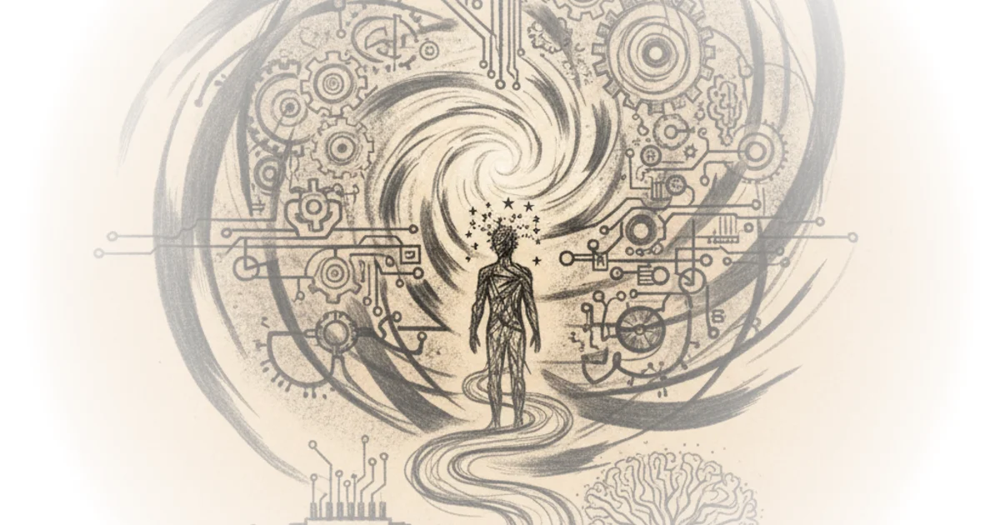
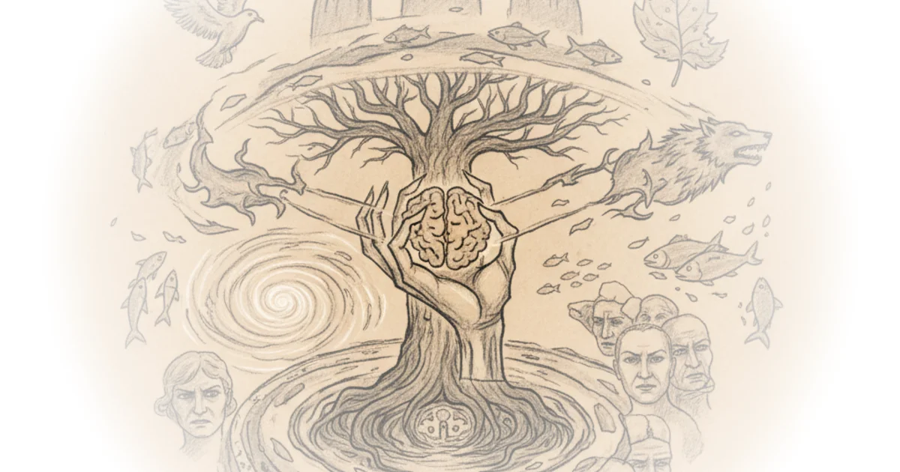

A comment on noah smith's "the moderately easy problem of consciousness" Brad DeLong · DeLong's Grasping Reality ·Apr 27, 2026 · 12 min read · Philosophy 
Don’t blame the Anti-Woke crowd for the administration Yascha Mounk · Persuasion ·Apr 27, 2026 · 13 min read · Philosophy
The moderately easy problem of consciousness Noah Smith · Noahpinion ·Apr 27, 2026 · 17 min read · Philosophy
Chernobyl wasn't a nuclear Disaster—It was a communist disaster Various · Reason ·Apr 26, 2026 · 13 min read · Philosophy
Not my john hicks lecture: "John (hicks) the apostate" Brad DeLong · DeLong's Grasping Reality ·Apr 25, 2026 · 13 min read · Philosophy
A philosophy written in the mountains #407 Andreas Matthias · Daily Philosophy ·Apr 25, 2026 · 10 min read · Philosophy
Ada palmer's "inventing the renaissance" Cory Doctorow · Pluralistic ·Apr 25, 2026 · 11 min read · Philosophy
The kind of climate activism that makes sense to me Yascha Mounk · Persuasion ·Apr 23, 2026 · 17 min read · Philosophy
Writing = living: Here's why Jeannine Ouellette · Writing in the Dark ·Apr 22, 2026 · 14 min read · Philosophy
It's not a crime if we do it (to nurses) with an app Cory Doctorow · Pluralistic ·Apr 22, 2026 · 16 min read · Philosophy
Heinrich heine answered the Jewish question Various · Compact Magazine ·Apr 22, 2026 · 13 min read · Philosophy
How to stand out when everyone uses AI Alberto Romero · The Algorithmic Bridge ·Apr 20, 2026 · 11 min read · Philosophy
Can we build a management flight simulator? Rohit Krishnan · Strange Loop Canon ·Apr 20, 2026 · 11 min read · Philosophy
Orban was bad, even though we don't have a perfect word for his badness Scott Alexander · Astral Codex Ten ·Apr 15, 2026 · 12 min read · Philosophy
What the studies say about how AI affects your brain: A (very big) compilation Alberto Romero · The Algorithmic Bridge ·Apr 15, 2026 · 19 min read · Philosophy
What it really means to "write in the dark" Jeannine Ouellette · Writing in the Dark ·Apr 15, 2026 · 13 min read · Philosophy
The strange ways people act—and how evolution explains them Yascha Mounk · Persuasion ·Apr 14, 2026 · 19 min read · Philosophy 
In praise of (some) compartmentalization Cory Doctorow · Pluralistic ·Apr 14, 2026 · 14 min read · Philosophy
All writers will end up AI-Maxxing, and this is good Richard Hanania · ·Apr 13, 2026 · 13 min read · Philosophy